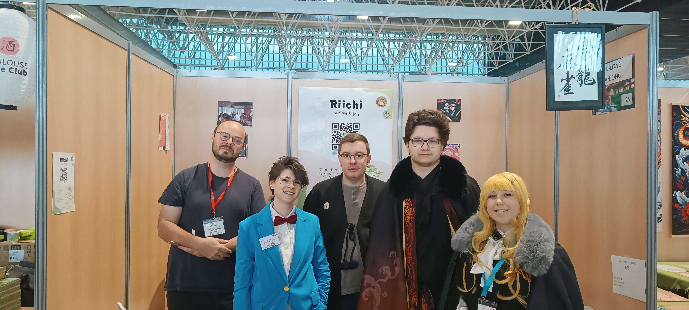

Festivals à venir

1er semestre 2026
Retrouvez le club aux différents festivals de la région toulousaine de mars à juin 2026.
Nous proposerons une à deux tables d'initiation au mahjong lors de ces événements, n'hésitez pas à venir nous voir pour découvrir le jeu ou simplement discuter !
- Blagnac joue - 7 mars (34 chemin des ramiers, Blagnac)
- Manga Touch Plaisance - 11-12 avril (Espace Monestié, Plaisance-du-Touch)
- Alchimie du jeu - 8-9-10 mai (MEET)
- TGS Springbreak - 13 juin (Diagora Labège)
- Fêtes des associations - 13 juin (Place du Capitole)